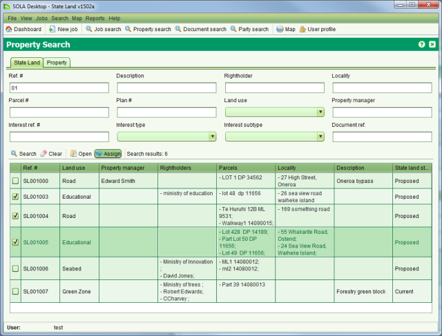
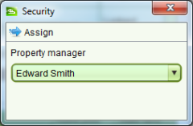

A Property Manager is a party assigned to manage and maintain a State Land Property or Job. Any issues or actions affecting the property or job should be assessed and actioned by the Property Manager. To assign a Property Manager to a property, use the Property Search to locate the property and check the checkbox beside the property you want to assign in the search results list. You can also assign more than one property at a time by selecting multiple properties at this point.

Selecting Property to Assign
This will enable the  Assign tool
allowing you to open the Assignment dialog
Assign tool
allowing you to open the Assignment dialog

Property Assignment
In the Assign to dropdown, select the appropriate Property Manager and click  Assign again. A confirmation message will display
stating the property has been assigned. Click OK the message to return to the Property Search
screen.
Assign again. A confirmation message will display
stating the property has been assigned. Click OK the message to return to the Property Search
screen.